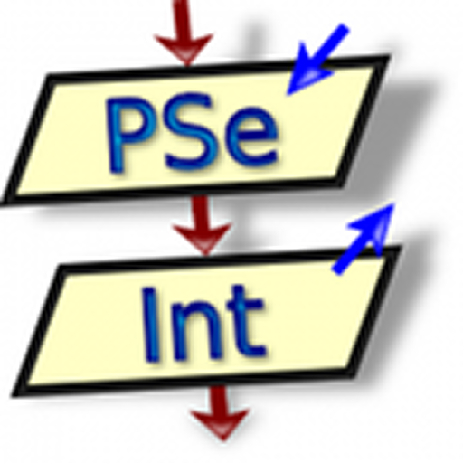

-
Tecnicatura Universitaria en Programación
Utn-frsr (2025-actualidad)
-
Desarrollador Web Frontend
Alura Latam & Oracle (2024)
-
Programador Web Backend
FreeCodeCamp (2024)
-
Programador Web Full Stack
Egg Live (2023-2024)
-
Kinesiología (2011-2015)
Universidad de Mendoza (2011-2015)
Pablo Velasco
Estudiante Tecnicatura Universitaria en Programación
Soy estudiante de la Tecnicatura Universitaria en Programación en la UTN FRSR. Me apasiona aprender nuevas tecnologías y mejorar mis habilidades de programación. Actualmente, estoy trabajando en proyectos que me permiten aplicar mis conocimientos y crecer profesionalmente.


Educación
Experiencia
-
Full Stack Developer Freelance · Oct 2023 – Actualidad
Desarrollo de soluciones web personalizadas para distintos clientes. En cada proyecto abordé la planificación, programación y mejora de funcionalidades, así como la resolución de problemas técnicos. Trabajo independiente enfocado en la entrega de productos funcionales y adaptados a cada necesidad.
-
Frontend Developer & Líder Técnico – Foo Talent Group (Rentary) · Abr 2025 – Jun 2025
Lideré el equipo frontend de una solución digital para gestión de alquileres. Coordiné flujos de trabajo, definí estructuras de componentes y promoví buenas prácticas de desarrollo. Participé activamente en el diseño del producto, documentación funcional y validación de requisitos. La experiencia incluyó colaboración con equipos interdisciplinarios y dinámicas ágiles.
-
Team Leader – No Country · Ene 2025 – Mar 2025
Guié equipos de desarrollo en proyectos colaborativos, fomentando metodologías ágiles, comunicación efectiva y liderazgo participativo. Me enfoqué en facilitar herramientas organizativas, acompañar el avance técnico y brindar feedback personalizado. Fui reconocido como uno de los mejores líderes del programa.
-
Full Stack Developer – Hackatón KlowHub · Nov 2024 – Dic 2024
Participé como desarrollador y project manager en la creación de una plataforma para clases en línea. Gestioné el avance del proyecto, coordiné tareas y lideré la presentación final. Colaboré en la definición de flujos de usuario, lógica de negocio y comunicación entre frontend y backend.
-
Frontend Developer – Proyecto WorkWise · Sep 2024 – Nov 2024
Formé parte del equipo de desarrollo de una plataforma de recursos humanos. Participé en el diseño de interfaz, validación de historias de usuario y definición de rutas. Colaboré estrechamente con diseñadores, testers y líderes de proyecto en un entorno de trabajo ágil.
-
Full Stack Developer & Líder Técnico – Proyecto Pasos Firmes · Jun 2024 – Ago 2024
Lideré el desarrollo de una plataforma solidaria de préstamo de productos ortopédicos. Me encargué de la planificación del proyecto, gestión del repositorio, definición de requisitos funcionales y desarrollo de funcionalidades tanto del frontend como del backend. El trabajo fue presentado ante stakeholders con una demo funcional.
-
Kinesiólogo – Hospital Lencinas · Jul 2017 – Actualidad
Atención integral a pacientes en contexto hospitalario. Esta experiencia fortaleció mis habilidades interpersonales, capacidad de escucha activa, trabajo en equipo y adaptación a entornos de alta demanda.
Tecnologías
Lenguajes y Herramientas utilizadas

PseInt
Ai